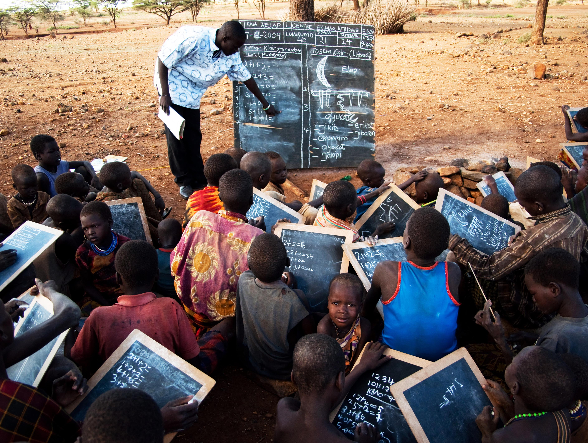

Sustainable Development Goal 1.1
United Nations Sustainable Development Goal 1.1 states that
“By 2030, eradicate extreme poverty for all people everywhere, currently measured as people living on less than $1.90 a day.”
Extreme poverty refers to the human condition where one is deprived of basic human needs, such as safe drinking water, food, health facilities, shelter, and education. As explained in Goal 1.1, extreme poverty is generally defined as living on less than $1.90 a day. This threshold is known as the International Poverty Line, and is measured in Purchasing Power Parity (PPP), a hypothetical currency that adjusts for price differences between different countries.
Since 1990, global poverty rates have been steadily decreasing year after year. According to the World Bank, 9.2% of the global population lived in extreme poverty in 2019, which is about 689 million people. When compared to the almost 36% global extreme poverty rate in 1990, it’s clear that a huge step has been taken towards combating this global issue. However, UNSDG 1.1 aims to eradicate extreme poverty by 2030, and with hundreds of millions of people still under that threshold, there is still a long way to go before we reach this target.
That doesn’t mean extreme poverty is unsolvable. Learn more about its relation to education as well as how you can help to contribute to the cause by navigating through the sidebar on the left of your screen.
Sources https://sdg-tracker.org/no-poverty https://www.worldvision.org/sponsorship-news-stories/global-poverty-facts https://www.worldbank.org/en/publication/poverty-and-shared-prosperity